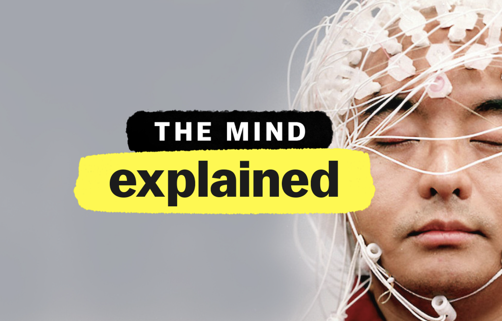

In basic, this is talking about how our brain can change and does change throughout our lives, and that the brain is not hard wired and fixed. Our brain is adaptable, like plastic, hence the term "Neuroplasticity".
Our brain is like a central hub. Everything we do, experience etc is utilizing different parts of our brain. The more we do a certain task or build a certain pattern, the more it strengthens that particular pathway of the part of the brain that is used. This also means that we can break old habits and create new ones by consistently gearing our brain towards new thoughts or new ways of doing things.
There are many different materials out there for Neuroplasticity. I found this video on YouTube quite helpful.
Looking back I also found this Docuseries quite helpful in explaining certain things about "The Mind". But this is only on Netflix.
